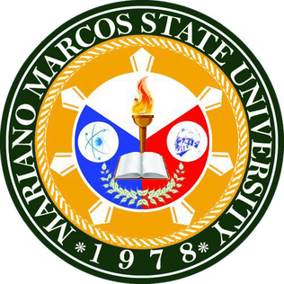

The program prepares learners with the practical skills in multimedia technology, web/mobile development, and network/systems administration, and supervisorial skills to mange an organizarion in these area of competencies, engage in a startup business or pursue a teaching career.
The learner should be able to: